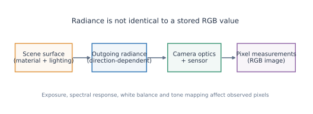
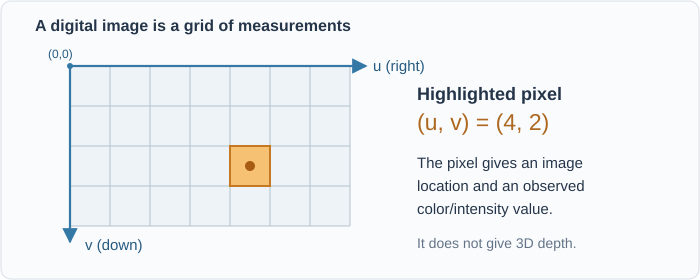
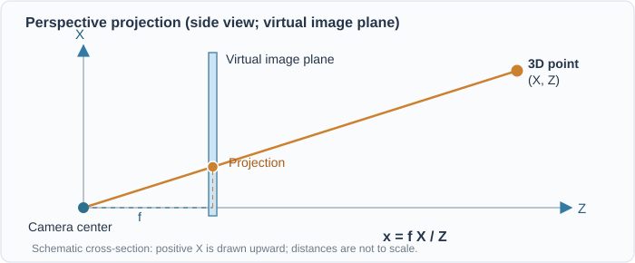
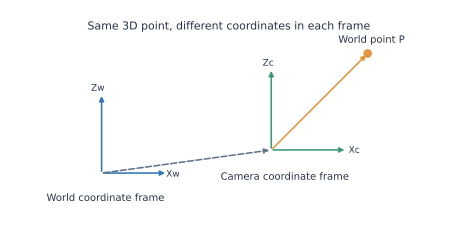
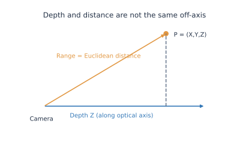
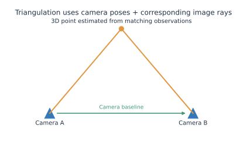
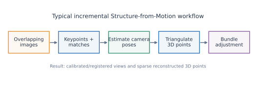
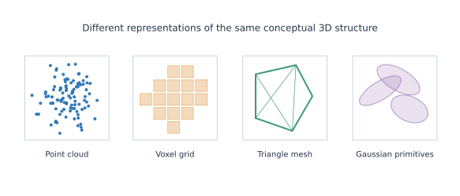
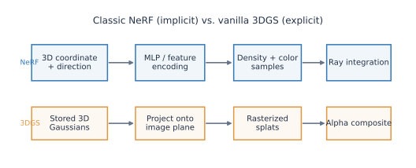
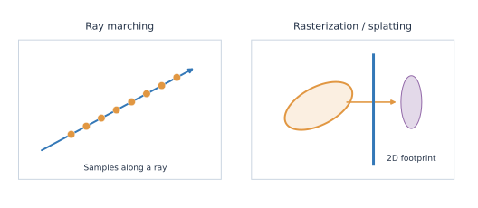

Computer Vision Fundamentals for Machine Learning Researchers
The camera, geometry, representation, and rendering vocabulary needed to read modern 3D reconstruction, NeRF, and 3DGS papers.
How to use this reference
You already know ML? Read the bold definitions, examine the figures, and try the interactive experiments. The equations add precision; the examples connect each concept to 3D reconstruction. For Gaussian-specific mechanics, continue to 3DGS Fundamentals. This is one evolving reference page, not a replacement for a CV textbook.
Jump to: A. Light and images · B. Cameras · C. Multiple views/COLMAP · D. Representations · E. NeRF · F. Rendering · G. Evaluation · Quick glossary
A. Light and images
The central idea: a digital image contains measurements produced by a camera; it is not a direct storage of 3D geometry or physical light fields.

| Term | Practical definition |
|---|---|
| Image / pixel | A sampled 2D array; a pixel is one sample location with measured or computed values. |
| Resolution | Image width × height, e.g., 640 × 480; spatial detail also depends on optics, scene, and sampling. |
| RGB / color space | Three channel values, whose interpretation depends on a convention such as linear RGB or sRGB. |
| Radiance | Directional light power per unit projected area per unit solid angle, with units W·m⁻²·sr⁻¹ (spectral radiance additionally has a wavelength unit). |
| Irradiance | Incoming light power per unit surface area (W·m⁻²), summed over directions. |
| Reflectance / albedo | Reflectance describes how a surface redirects incoming light; albedo generally summarizes its intrinsic reflective coloration, under a stated model. |
| BRDF | A function describing reflected radiance in an outgoing direction for an incoming illumination direction. |
| View-dependent appearance | The observed appearance changes with viewpoint: specular highlights and other direction-dependent effects are examples. |
| Exposure / white balance | Camera processing that changes recorded intensities or channel balance. |
| Photometric consistency | The idea that corresponding observations should have compatible appearance under the assumed imaging/lighting model. |
Radiance is not the same thing as an RGB value
Radiance describes light before camera-specific processing. A stored pixel may additionally depend on exposure, sensor response, color conversion, tone mapping, occlusion, and noise. For 3DGS: learned appearance coefficients are adjusted to reproduce observed RGB images; they are not guaranteed to be calibrated physical radiance values.
Image coordinates

We use \(u\) increasing rightward and \(v\) increasing downward; discrete pixel indices usually begin at the top-left. A pixel \((u,v)\) specifies an image location, not a unique world-space point. Pixel-center conventions can differ across packages.
B. Camera models and coordinate systems
The central idea: camera geometry maps between a 3D scene point and its 2D image location.

For a point in a camera coordinate system, \(\mathbf{P}_c=(X,Y,Z)^\top\) with \(Z>0\), the idealized pinhole projection (zero skew, no distortion) is
Here \((f_x,f_y)\) are focal lengths in pixel units and \((c_x,c_y)\) is the principal point. For example, if \(X=1\), \(Z=5\), \(f_x=600\), and \(c_x=320\), then \(u=440\) pixels.
Try it: change depth and focal length; notice that a point's projected position is a prediction from camera geometry.
Open the camera explorer separately

| Term | Practical definition |
|---|---|
| Camera center / optical axis | The camera's projection center and its forward-looking principal direction. |
| Pinhole camera | Ideal central-projection model, often used after undistorting real images. |
| Focal length / field of view | Focal length sets perspective scale in the image; field of view depends on focal length and sensor/image extent. |
| Principal point | Where the optical axis intersects the ideal image plane (under the model). |
| Intrinsics \(K\) | Camera matrix holding focal length(s), principal point, and optionally skew. |
| Extrinsics | Rotation and translation transforming between coordinate systems; not the same as \(K\). |
| Camera pose | The camera's position and orientation in a chosen reference frame. |
| World-to-camera transform | \(\mathbf{P}_c=R\mathbf{P}_w+\mathbf{t}\), for a particular convention. |
| Camera-to-world transform | Inverse of the world-to-camera transform; important when reading model files or using viewers. |
| Homogeneous coordinates | Convenient four-component representation for composing rigid/projective transformations. |
| Projection matrix | A matrix expression combining camera intrinsics and extrinsics, typically \(P=K[R\mid t]\). |
| Calibration | Estimating camera parameters (typically intrinsics/distortion, and sometimes extrinsic poses). |
| Lens distortion | Departure from ideal pinhole projection, e.g., radial and tangential distortion. |
| Back-projection / camera ray | A pixel defines a ray through the camera; without depth it does not define a unique 3D point. |
| Orthographic projection | Projection without perspective size reduction with increasing depth; unlike standard perspective imaging. |
Coordinate convention matters
OpenCV/COLMAP image conventions and graphics/viewer conventions may differ in axis orientation, matrix layout, and camera direction. Never assume that camera-to-world and world-to-camera matrices are interchangeable. The \(Z>0\) camera-forward convention here is stated for these examples.
Depth is not always distance

Depth \(Z\) is displacement along the camera's forward axis. Range is Euclidean distance to the camera center, \(\sqrt{X^2+Y^2+Z^2}\). Off-axis, these differ. This matters when interpreting depth maps and projecting Gaussians.
C. Multi-view geometry and COLMAP
The central idea: corresponding observations from different camera positions allow us to estimate both geometry and camera poses.

| Term | Practical definition |
|---|---|
| Viewpoint / baseline | A camera's observing pose; baseline is separation between camera centers. |
| Parallax / disparity | View-dependent apparent shift of a 3D point; in rectified stereo, disparity is its horizontal pixel displacement. |
| Feature/keypoint | Detectable image location (e.g., a corner), typically with a descriptor for matching. |
| Descriptor / matching | Numeric description of image appearance and the process of finding likely correspondences. |
| Correspondence / track | Observations believed to originate from the same 3D point across views. |
| Triangulation | Estimate a 3D point using its corresponding image rays and known camera poses. |
| Epipolar geometry | Geometric restrictions on corresponding points between two camera views. |
| Fundamental / essential matrix | Matrices expressing epipolar constraints; the essential matrix assumes calibrated camera coordinates. |
| Reprojection error | Difference between an observed 2D feature and the projection of its estimated 3D point. |
| Bundle adjustment | Joint nonlinear optimization of camera parameters/poses and 3D point positions to reduce reprojection error. |
| Camera registration | Estimating a camera pose in the evolving reconstruction. |
| SfM (Structure from Motion) | Recover camera poses and typically sparse scene structure from overlapping images. |
| MVS (Multi-View Stereo) | Recover denser scene geometry from multiple overlapping views with known or estimated cameras. |
| Sparse/dense reconstruction | A relatively small set of triangulated feature points vs. geometry estimated much more densely. |
| Depth map / point cloud | Per-pixel distance/depth estimates vs. a set of 3D sample locations. |
| COLMAP | An SfM/MVS toolkit that estimates and stores camera models, image poses, and reconstructed points. |
Interactive stereo disparity
For parallel, rectified cameras with baseline \(B\), focal length \(f\) (pixels), and depth \(Z\), the ideal horizontal disparity magnitude is

What will your COLMAP reconstruction contain?
In a typical sparse model, cameras.bin/.txt stores camera intrinsics and camera models; images.bin/.txt stores registered-image poses and observations; points3D.bin/.txt stores triangulated 3D points and tracks. Some newer formats also include rig/frame files. These are reconstruction estimates, not trained 3D Gaussian attributes.
Relation to 3DGS: the official pipeline uses the camera reconstruction and sparse points to initialize and supervise a separate collection of optimizable Gaussians.
D. 3D scene representations

| Term | Practical definition |
|---|---|
| Scene geometry vs. appearance | Geometry describes spatial structure; appearance describes what is seen from a viewpoint under an image-formation model. |
| Explicit representation | Stores individual primitives (points, triangles, voxels, Gaussians), usually with their attributes. |
| Implicit representation | Geometry/appearance is defined by evaluating a function at arbitrary coordinates. |
| Point cloud | Set of 3D sample locations, optionally with color/normal observations; points have no intrinsic area. |
| Mesh | Connected vertices/edges/faces approximating a surface, commonly using triangles. |
| Voxel | A cell in a 3D grid, analogous to a pixel in 2D. |
| Voxel grid | Discrete 3D lattice of values or occupied cells. |
| Occupancy field | Function indicating whether a spatial location is occupied, possibly probabilistically. |
| SDF (signed distance function) | Function whose magnitude approximates distance to a surface and sign indicates side/inside-outside by convention. |
| Volume vs. surface representation | Models properties throughout space vs. primarily along surfaces. |
| Continuous vs. discrete sampling | A function can be queried at arbitrary locations even if its parameters are stored discretely. |
| Gaussian primitive / anisotropy | A spatially extended ellipsoidal distribution; anisotropy allows different directional spreads. |
A voxel has a finite grid cell; a point has no intrinsic spatial extent; a Gaussian has a smoothly decaying spatial influence. These distinctions affect rendering and optimization.
E. Neural fields and NeRF
NeRF (Neural Radiance Fields) is a method for representing and rendering a scene, not a synonym for MLP or ray marching.

| Term | Practical definition |
|---|---|
| Radiance field | A function assigning directional radiance to locations and directions; practical neural rendering also models attenuation/volume density. |
| Neural field | A field whose values are computed or parameterized by a neural network/learnable feature representation. |
| Coordinate-based network | Predicts values from continuous coordinates rather than one fixed-size image tensor. |
| MLP | Multilayer perceptron; in original NeRF, an MLP maps encoded position/direction to density and view-dependent color. |
| Positional encoding / Fourier features | Maps coordinates to a higher-frequency feature space to help networks represent fine detail. |
| NeRF | Neural scene representation using a continuous radiance/density field plus differentiable volume rendering for novel-view synthesis. |
| Volume density \(\sigma\) | Nonnegative attenuation coefficient per unit distance, used in NeRF's volume-rendering model; not mass density. |
| Transmittance \(T\) | Fraction of radiance surviving attenuation along a ray, before the next interval or sample. |
| Hash-grid encoding | Learned multi-resolution spatial features indexed through hash tables, used to accelerate neural fields. |
| Instant-NGP | A neural graphics framework popularizing efficient multiresolution hash-grid encoding. |
| View-dependent color | Color evaluated as a function of direction, e.g., via NeRF's network or 3DGS's SH coefficients. |
Critical distinction
A radiance field is a type of scene function. NeRF is one neural implementation family. A multilayer perceptron is one network architecture. 3DGS instead stores explicit Gaussian primitives and view-dependent appearance parameters; it need not use a scene-wide MLP.
F. Rendering and novel view synthesis
Rendering means generating a predicted image from a scene representation and a selected camera. Novel View Synthesis (NVS) means rendering the scene from a viewpoint not among the input views; this is a task, not one particular algorithm.

| Term | Practical definition |
|---|---|
| Ray casting | Send a geometric ray through the scene to query intersections or other spatial properties. |
| Ray tracing | Follow ray interactions with scene geometry; often includes secondary reflections/refractions. |
| Ray marching | Evaluate many discrete samples along a ray, often used for volumes or implicit fields. |
| Volume rendering | Integrate emission/color and attenuation along camera rays. |
| Rasterization | Map projected primitives to affected image pixels, then compute their contributions. |
| Gaussian splatting | Project Gaussian primitives to image-space footprints (splats) and accumulate their contributions. |
| Alpha blending / compositing | Combine overlapping contributions according to opacity and ordering. |
| Occlusion / visibility | Parts of a scene may be hidden by nearer contributions. |
| Depth sorting / depth test | Order or compare contributions by depth for correct visibility handling. |
| Tile-based rendering | Divide an image into tiles and process primitives affecting each tile for efficiency. |
| Differentiable rendering | Rendering designed so image losses can yield gradients for representation parameters. |
| Aliasing / anti-aliasing | Artifacts caused by inadequate sampling and methods to suppress them. |
| Novel View Synthesis (NVS) | Image prediction for new camera poses from a learned/reconstructed scene. |
Compare: NeRF typically samples a ray, while 3DGS projects many Gaussian primitives onto image pixels. Both eventually combine multiple contributions along a viewing direction.
G. Learning and evaluation
| Term | Practical definition |
|---|---|
| Observed / ground-truth image | Captured reference image used as a supervision target (subject to camera and image quality). |
| Predicted / rendered image | Image generated by the current model for a selected camera. |
| Photometric loss | Discrepancy between predicted and observed pixels. |
| Reconstruction vs. novel-view evaluation | Assessment at training/known views vs. held-out viewpoints. |
| PSNR | Peak signal-to-noise ratio derived from pixel MSE (larger generally means lower MSE). |
| SSIM | Structural similarity measure comparing local brightness/contrast/structure. |
| LPIPS | Learned perceptual image similarity based on deep feature differences (lower typically better). |
| Per-view supervision | Use one input image/camera observation to update a shared 3D representation. |
| Multi-view consistency | Predictions from different views should agree with one coherent 3D scene. |
Quality metrics do not prove correct geometry
High image PSNR can coexist with geometric errors or poor novel-view rendering. Check both unseen views and relevant geometric diagnostics when possible.
Quick reference: commonly confused terms
| Often confused | Remember |
|---|---|
| Radiance / RGB value | Physical directional light quantity / processed camera or rendered channel value. |
| Radiance field / NeRF / MLP | Field concept / neural scene method / network building block. |
| Camera intrinsics / extrinsics | Inside-camera projection parameters / pose transformation. |
| Depth / range | Optical-axis coordinate / distance from camera center. |
| SfM / MVS | Sparse structure and cameras / denser geometry from calibrated views. |
| Ray marching / splatting | Sample along rays / project and composite primitives. |
| Volume density / Gaussian population density | Attenuation per unit distance / number of primitives in an area or volume. |
| Rendering / training | Calculate image prediction / adjust parameters using its loss gradients. |
| PLY / rendered image | Structured stored geometric/attribute data / 2D pixel output of a renderer. |
Try this with your own data
- Open your COLMAP reconstruction and identify which output contains camera intrinsics, registered poses, and sparse 3D points. In COLMAP, exported text models are convenient for inspection.
- Compare the meaning of a COLMAP point with a Gaussian primitive in your trained 3DGS
point_cloud.ply. - Use the reproducible Python scripts supplied alongside these notes for static figures and a PLY inspection plot; see
README_VISUAL_NOTES.mdin the website update package.
Next: 3DGS Fundamentals — from one Gaussian to a complete trainable renderer.